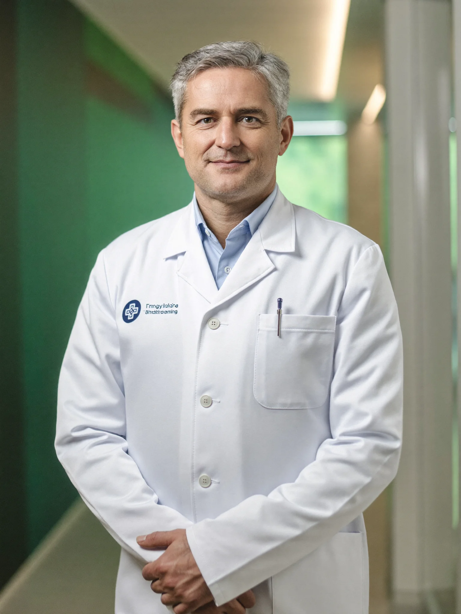

Doç. Dr. Kerem Yıldırım
Doç. Dr. Kerem Yıldırım, Özel Avrupa Tıp Merkezi Kardiyoloji Bölümü'nde ritim bozuklukları, Holter değerlendirmesi ve spor kardiyolojisi alanlarına odaklanarak hizmet vermektedir. Muayene ve tetkik süreçleri, her kişinin genel sağlık durumuna göre hekim tarafından planlanır.

Hakkında
Doç. Dr. Kerem Yıldırım, tıp eğitimini 1996-2002 yılları arasında Ege Üniversitesi Tıp Fakültesi'nde tamamladı. Tıpta Uzmanlık Sınavı sonrasında kardiyoloji uzmanlık eğitimini 2003-2008 yılları arasında İstanbul Eğitim ve Araştırma Hastanesi Kardiyoloji Kliniği'nde aldı. Uzmanlık döneminde yönelmeye başladığı ritim bozuklukları alanındaki birikimini, 2012 yılında Avrupa Kardiyoloji Derneği (ESC) değişim programı kapsamında bir Avrupa üniversite hastanesinde aritmi ve klinik elektrofizyoloji gözlemciliği ile sürdürdü. 2016 yılında kardiyoloji alanında doçent unvanı aldı; 2018 yılında Avrupa Önleyici Kardiyoloji Birliği'nin spor kardiyolojisi sertifika programını tamamladı. Ritim bozuklukları, Holter kayıtlarının değerlendirilmesi ve sporcu kalbi konularında ulusal ve uluslararası hakemli dergilerde yayımlanmış makaleleri ile bilimsel kongrelerde sunulmuş bildirileri bulunmaktadır.
Klinik çalışmalarında ağırlıklı olarak çarpıntı, ritim bozuklukları, bayılma (senkop) yakınmalarının değerlendirilmesi, Holter EKG ve tansiyon Holter kayıtlarının yorumlanması ile spor öncesi kardiyolojik tarama konularına odaklanmaktadır. Değerlendirme sürecinde ayrıntılı öykü ve muayene bulgularını EKG, ekokardiyografi ve ritim izlem kayıtlarıyla birlikte ele almakta; takip ve tedavi seçenekleri her kişinin genel sağlık durumuna göre hekim tarafından planlanmaktadır. Türk Kardiyoloji Derneği ve Avrupa Kardiyoloji Derneği üyesi olarak alanındaki bilimsel toplantıları takip etmektedir. Bu sayfadaki bilgiler genel bilgilendirme amaçlıdır; hekim muayenesinin yerini tutmaz. Göğüs ağrısı, bilinç kaybı gibi ani gelişen durumlarda 112 Acil Çağrı Merkezi aranmalıdır.
Uzmanlık alanları
- Ritim bozuklukları (aritmi) değerlendirmesi
- Holter EKG ve ritim izlemi
- Spor kardiyolojisi ve sporcu kalp taraması
- Çarpıntı ve bayılma (senkop) değerlendirmesi
- Ekokardiyografi
- Efor (egzersiz EKG) testi
Eğitim ve kariyer
- Ege Üniversitesi Tıp FakültesiTıp eğitimi · 1996-2002
- İstanbul Eğitim ve Araştırma Hastanesi, Kardiyoloji KliniğiKardiyoloji uzmanlık eğitimi · 2003-2008
- Avrupa Kardiyoloji Derneği (ESC) Değişim ProgramıAritmi ve klinik elektrofizyoloji gözlemciliği · 2012
- Üniversitelerarası KurulKardiyoloji doçentliği · 2016
- Avrupa Önleyici Kardiyoloji Birliği (EAPC)Spor kardiyolojisi sertifika programı · 2018
Bağlı olduğu birim
Kardiyoloji birimimiz hakkında ayrıntılı bilgi için birim sayfasını inceleyebilirsiniz.
Doç. Dr. Kerem Yıldırım için randevu oluşturun
Çalışma günlerine göre online randevu alabilir, dilerseniz telefonla hasta danışmanlarımızdan destek alabilirsiniz.